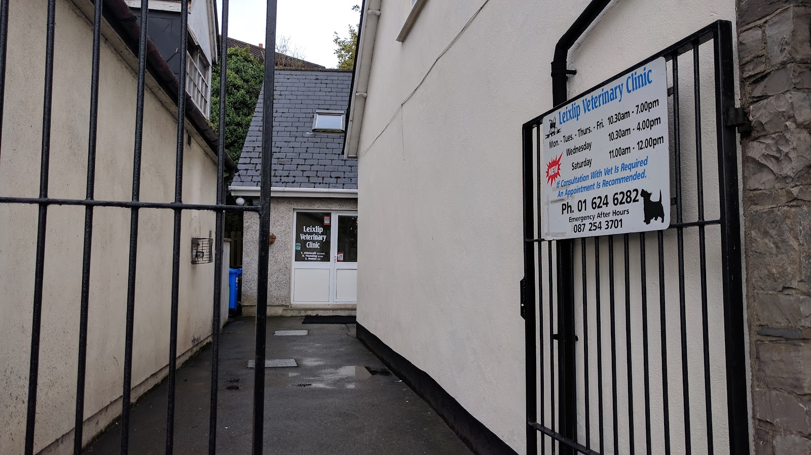

Consultations
Routine check-ups and anything that's worrying you. An appointment is recommended if you need to see a vet.

Small animal practice · Leixlip, Co. Kildare
A small, long-established practice on Captain's Hill. Consultations, surgery, vaccinations and the ordinary day-to-day care that keeps a dog or cat well — with the same faces looking after them each time.
Our care
Everyday care and the harder days too — for dogs, cats and small pets.
Routine check-ups and anything that's worrying you. An appointment is recommended if you need to see a vet.
Routine and more complex procedures, with recovery care and follow-up at the same practice.
Puppy and kitten courses, annual boosters, and the certificates you'll need for kennels or travel.
Chipping and registration — the legal requirement for dogs, and the thing that gets them home again.
Ongoing management for older animals — the visits where knowing the animal's history actually matters.
A dedicated out-of-hours number so you're not searching the internet at 11 o'clock at night.
Opening hours
If a consultation with a vet is required, an appointment is recommended. Ring 01 624 6282 and we'll find you a time.
Years Serving Leixlip
Happy Patients
Google Rating
Client Reviews
Reviews
Unedited reviews left by clients on Google.
“So grateful to Theresa, Sandra and Rhona for the wonderful care given to our little Milo who had really difficult surgery recently. They are so caring to both our dogs and to the last dog we had Pepe…”
“My goodness, how lucky we are to have found you! The kindness, empathy, and compassion shown by you all is clear to see. Caring for animals isn't just a profession, it's a vocation for all of you.”
“Spencer and Miss Naomi's vet. They are all amazing in this practice and go above and beyond. Very kind and excellent care for your fur babies. Highly recommend”
“Top class vets here I'm delighted I've come to this vets. Great care taken for animals.”
“Can't recommend this vet enough the compassion these girls have for animals is another level 5* Care”
Ring the clinic and we'll find you a time. If it's after hours and it can't wait, use the emergency number.
Call 01 624 6282